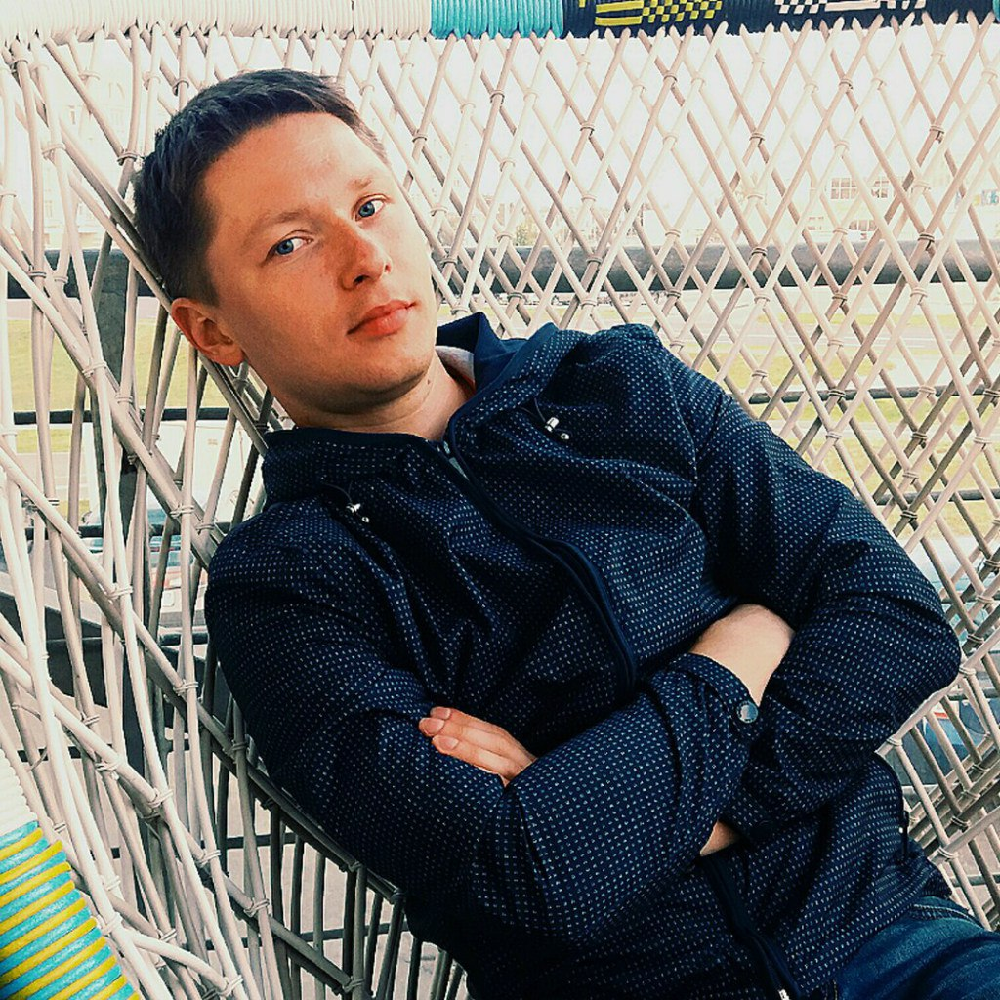

STANISLAU HAURYLCHYK
PERSONAL DATA

| Name: |
Stanislau Haurylchyk |
| Date of Birth: |
15/03/1986 |
| Location: |
Belarus, Minsk |
| Mobile: |
+375 (29) 368-21-58 |
| E-mail: |
stanislau.haurylchyk@gmail.com |
| Skype: |
gavrillavigne |
| LinkedIn: |
www.linkedin.com/in/shaurylchyk |
OBJECTIVE
Desired Position: Full Stack Web Developer
SUMMARY OF QUALIFICATION
Quite seriously I began to study PHP and related technologies about two years ago. Before that time, I studied
theory, watched video courses, solved simple tasks. Soon I realized that without serious practice I would spent
very much time on my training. So I decided to write my first project (you can see the link to the project
repository in the CV below).
I wrote the project without the use of CMS and frameworks to understand Web technologies better. But in my project
I trying to use OOP, MVC pattern and database management system MySQL. After the completion of the current project
I’m planning to write a project using the framework (probably it will be Yii2).
I also have commercial development experience. About six months I work as a Junior PHP Developer. I develop and
refinement of existing functionality for the company’s CRM system using the Yii2 framework.
TECHNICAL SKILLS
- LAMP, LEMP, Linux, Vagrant, PuPHPet, Composer, Docker
- PHP, MVC, OOP, REST API, YII2
- MySQL, SQL
- HTML, CSS
- HTTP
- Git Bash, Bitbucket
RELEVANT EXPERIENCE
- Participation in the company’s projects
- Teamwork
- Communication with the users of companies
- Understanding the internal processes of a big company
LANGUAGES
- English – Intermediate
- Russian – Native Speaker
EDUCATION
2003 – 2008 /Belarusian National Technical University, Power Plant Construction and Engineering Services Faculty /Hydrotechnical Construction (Civil Engineer) /Minsk, Belarus
OTHER INFORMATION ABOUT ME
I am married since 2018 and I have a military ID. I prefer a healthy lifestyle like traveling, biking, camping
and so on. I also like playing the guitar. I am free of the bad habits. I always try to find the way from
difficult situation by myself.
COURSES AND CERTIFICATES
| Course name: |
PHP UP “Advanced PHP programming course” |
| Issued: |
Online video courses https://php-up.com |
| Years of study: |
2018 |
| Course name: |
PHP START “Base PHP programming course” |
| Issued: |
Online video courses https://php-start.com |
| Years of study: |
2016 |
| Course name: |
“Programming in PHP” (advanced course) |
| Issued: |
Center of Educational Technologies “BelHard” |
| Years of study: |
2015 |
PROJECTS
| Type: |
Site-portfolio for a make-up artist |
| Link to the repository: |
https://bitbucket.org/stanislau-haurylchyk/sk-stylist.com/src/master/
|
| Current state: |
The site is under development |
PROFESSIOANL EXPERIENCE
| Company: |
HOT TELECOM |
| Company Web Site: |
www.hottelecom.by |
| Company Location: |
Belarus, Minsk |
| Duration: |
Current time |
| Position: |
Junior PHP Developer |
| Responsibilities: |
Development and refinement of existing functionality for the company’s CRM
system using the Yii2 framework
|
| Company: |
Armtek, Group of companies |
| Company Web Site: |
www.armtek.by |
| Company Location: |
Belarus, Minsk |
| Duration: |
12/2014 – 01/2019 |
| Description of company: |
Spare parts for foreign-made passenger cars and commercial vehicles
|
| Position: |
VoIP System Administrator |
| Responsibilities: |
Administration of the: company’s telephony servers based on Asterisk
software; company’s telephony servers based on SAP BCM software; Infracall call center server; GSM-gateways and
their configuration; corporate portal server and WebTutor software; several web-servers linux (Centos) and
virtual platforms; several company sites. Ensuring the uninterrupted operation of the above resources, as well
as performing work on their backup and recovery.
|
| Company: |
EPAM Systems Incs |
| Company Web Site: |
www.careers.epam.by |
| Company Location: |
Belarus, Minsk |
| Duration: |
09/2014 – 12/2014 |
| Description of company: |
Software development |
| Position: |
IT Engineer |
| Responsibilities: |
Work in the second line of support users. Preparation of new workplaces for
internal users and provision of technical support to employees of the company.
|
| Company: |
Armtek, Group of companies |
| Company Web Site: |
www.armtek.by |
| Company Location: |
Belarus, Minsk |
| Duration: |
11/2011 – 08/2014 |
| Description of company: |
Spare parts for foreign-made passenger cars and commercial vehicles
|
| Position: |
Systems Engineer |
| Responsibilities: |
Installation of server and client operating systems; Administration of a
small network (9 PCs); Troubleshooting and PC diagnostics; Good knowledge of hardware; Providing information
security for users (including eToken, TrueCrypt); Experience with virtualization systems (VMware Workstation
(player), VirtualBOX); Basic programming skills; Work in the HelpDesk service (classification and registration
of users’ requests, with the following assignment of orders to the second support line); Support of users’
workplaces (more than 150); Advising users on working with OS and company’s software.
|
| Company: |
City Children’s Infectious Clinical Hospital |
| Company Web Site: |
www.gdikb.by |
| Company Location: |
Belarus, Minsk |
| Duration: |
03/2010 – 09/2010 |
| Description of company: |
City Hospital |
| Position: |
Electronic Engineer |
| Responsibilities: |
Perform the functions of the System Administrator Assistant; User support.
Preparation of new workplaces for internal users; Troubleshooting; Advising users on working with standard
office software. Creating images of the system, etc.
|